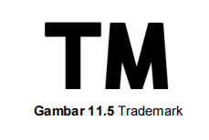

Rangkuman Pertemuan 11
KEAMANAN SISTEM INFORMASI DAN ETIKA
1. Keamanan Sistem InformasiKeamanan sistem informasi adalah suatu kebijakan, prosedur, dan segala pengukuran teknis yang ditunjukan dan digunakan untuk mencegah akses tidak sah, perubahan program oleh pihak lain, pencurian informasi, atau bahkan kerusakan fisik terhadap sistem informasi itu sendiri. Keamanan sistem informasi ditunjukan untuk melindungi kerahasiaan, dan integritas suatu sumber informasi dari pihak-pihak yang tidak bertanggung jawab.
Sangat penting bagi kita untuk meningkatkan keamanan pada sistem informasi. Pada era saat ini dimana teknologi semakin canggih maka semakin banyak cara untuk melakukan suatu kejahatan pada sistem informasi. Keamanan komputer adalah salah satu upaya untuk pengamanan atas kinerja, fungsi dan proses komputer. Keamanan komputer ini mempunyai fungsi untuk menjaga sistem keamanan komputer dari gangguan atau interupsi dari pihak lain.
2. Pengertian InformasiInformasi adalah data yang sudah diolah yang kemudian menjadi sesuatu yang berguna dalam pengambilan keputusan. Informasi didapatkan dari proses pengumpulan fakta dan data dengan suatu metode tertentu. Pengertian informasi menurut para ahli:
a. Kamus Besar Bahasa Indonesia
Informasi dijelaskan sebagai penerang, pemberitahuan, kabar/berita tentang sesuatu
b. Gordor B. Davis
Menyatakan informasi sebagai data yang sudah diolah menjadi bentuk yang nyata yang dapat dirasakan dalam keputusan-keputusan yang sekarang maupun keputusan yang akan datang.
Informasi dapat dikategorikan berguna dan berharga jika dapat menjadi suatu acuan dalam mengambil keputusan yang baik. Adapun jenis-jenis informasi yaitu:
a. Absolute Information
Merupakan informasi yang tidak perlu penjelasan karena disampaikan dengan jaminan.
b. Substitusional Information
c. Informasi yang memiliki konsep informasi yang dipergunakan untuk sejumlah informasi dan terkadang penyebutannya diganti dengan istilah komunikasi.
d. Philosophic Information, Adalah informasi yang memiliki hubungan tentang konsep yang menghubungkan informasi antara pengetahuan dan kebijakan.
3. Etika dalam Sistem InformasiEtika dalam kamus besar Bahasa Indonesia berarti ilmu tentang apa yang baik dan apa yang buruk, dan tentang hak dan kewajiban moral. Sedangkan etika dalam sistem informasi menurut Richard Mason (1986), dibagi menjadi beberapa cakupan yang disingkat PAPA (Privasi, Akurasi, Peoperti, Akses), yaitu:
a. Privasi
Privasi adalah hak tiap individu untuk dapat mempertahankan informasi dari akses orang lain yang tidak diizinkan untuk mengaksesnya. Dalam UU Teknologi Informasi ayat 19, privasi berarti hak tiap individu untuk mengendalikan penggunaan informasi tentang identitas pribadi, baik oleh dirinya sendiri atau oleh orang lain.
Privasi dibagi menjadi 2, yaitu privasi fisik yang berarti hak seseorang untuk mencegah orang lain yang tidak di izinkan atau tidak dikehendaki terhadap waktu, ruang dan property (hak milik), dan privasi informasi yang berarti hak tiap individu untuk menentukan kapan, bagaimana, dan apa saja yang ingin dikomunikasikan dengan orang lain.
-Akurasi
.
Akurasi merupakan faktor yang dipenuhi dalam suatu sistem informasi. Jika suatu akurasi tidak terpenuhi dalam sistem informasi maka dapat menyebabkan hal-hal.yang cukup membahayakan, merugikan serta menggangu.
-Properti (Hak Milik)
Hak Atas Kekayaan Intelektual atau biasa disingkat HAKI merupakan suau cara untuk melindungan property atau hak milik yang diatur pada 3 mekanisme:
1) Hak Cipta (Copyright)

.
Adalah hak yang dijamin oleh kekuatan hukum untuk melarang mempublikasikan kekayaan intelektual atau hasil karya orang lain tanpa seizin penciptanya seperti adaptasi, reproduksi, dan distribusi publik. Adapun pertimbangan pengecualian hukum dalam menentukan apakah akan diterapkan perlindungan hak cipta, apabila:
- Tujuan dan sifat penggunaannya untuk komersil atau untuk tujuan pendidikan nonprogfit.
- Sifat suatu karya berhak-cipta
- umlah dan substansi bagian yang digunakan dalam suatu karya yang Efek kegunaan terhadap pasar potensial atau nilai dari karya berhak-cipta.
Jika seseorang ingin menyatakan bahwa suatu karya adalah miliknya maka harus mencantumkan peringatan. Peringatan hak cipta yang dimaksud seperti lambang © atau Hak Cipta, tahun, dan nama pemilik hak cipta. Hak cipta itu sendiri akan berakhir setelah 95 tahun.
- Hak Paten

.
Bentuk perlindungan yang sulit didapat karena hanya akan diberikan untuk penemuan-penemuan inofatif dan berguna saja. Hak paten ini hanya memberikan perlindungan hukum selama 20 tahun.
Hak paten bisa diberikan untuk sebuah proses, mesin atau barang yang sedang diproduksi atau digunakan. Barang tersebut bisa berupa ide, software, teknik, ataupun mesin yang tidak bersifat universal.
Hak paten memiliki sifat teritorial saja. Itu berarti sebuah hak paten hanya berlaku pada suatu lokasi tertentu saja. Jika seseorang ingin mematenkan penemuannya di banyak negara, maka dia haruslah mengajukan hak patennya di setiap negara tersebut.
- Rahasia Perdagangan

.
Rahasia perdagangan merupakan informasi yang tidak diketahui oleh umum pada bidang teknologi maupun bisnis, yang dimana informasi ini memiliki nilai ekonomi karena sangat berguna pada kegiatan usaha, dan informasi ini sangat dijaga kerahasiaannya oleh si pemiliknya.
Ruang lingkup perlindungan pada rahasia perdagangan yaitu metode produksi, cara pengolahan, metode penjualan atau informasi lain di bidang teknologi atau bisnis yang memiliki nilai ekonomi. Hukum rahasia perdagangan melindungi melalui lisensi dan kontrak. Melindungi kerahasiaan informasi yang berhubungan dengan bisnis.
.
-Trademark
.
Suatu produk dapat diidentifikasi melalui kata, nama, simbol, produk, bentuk, device atau kombinasi semuanya sebagai suatu ciri khas. Trademark juga sering disebut dengan merk dagang, yang maksudnya adalah berupa nama atau simbol yang menjadi suatu cirri khas dari sebuah produk yang berbentuk barang maupun jasa.
Merk dagang biasanya berupa nama, kata, frasa, gambar, logo atau kombinasi dari beberapa unsur tersebut. Di dalam Undang-undang No. 15 Tahun 2001 mengatur masa berlaku sebuah merk dagang yang biasanya antara tujuh sampai dua puluh tahun, dan dapat diperpanjang.
Trademark atau merk dagang memiliki simbol “TM” yang ada pada akhir merk produk. Trademark atau merk dagang ini memiliki fungsi sebagai identitas dari sebuah produk dan juga sebagai pembeda dengan produk lain yang serupa.
4. Etika Menggunakan KomputerEtika komputer adalah sebuah frase yang sering digunakan namun sulit untuk didefinisikan. Untuk menanamkan kebiasaan komputer yang sesuai, etika harus dijadikan kebijakan organisasi etis. Sejumlah organisasi mengalamatkan isu mengenai etika komputer dan telah menghasilkan guidelineetika komputer, kode etik. Berbeda dengan ilmu komputer,yang hanya eksis pada abad ini, ilmu dan disiplin lainnya telah memiliki waktu yang lebih panjang untuk mengembangkan standard dan prinsip etis yang menginformasikan perkembangan baru.
Kode etik adalah konsekuensi alamiah realisasi komitmen Mewarisi keamanan penggunaan teknologi komputer baik sektor publik dan swasta. Ada kebutuhan paralel bagi profesionalisme pada bagian pengguna sistem komputer, dalam terminologi tanggung jawab mereka untuk beroperasi secara legal dengan respek penuh dalam urutan yang benar. User harus dibuat sadar terhadap resiko operasi ketika sistem sedang digunakan atau diinstal ;mereka memiliki tanggung jawab untuk mengidentifikasi dan mengejar penyelewengan dalam hal keamanan. Ini akan memberikan sikap etis dalam komunitas pengguna.
Pendidikan dapat memainkan peran yang sangat penting dalam pengembangan standar etika dalam hal layanan komputer dan komunitas user. Pembukaan komputer terjadi pada masa awal dibanyak negara paling sering di level sekolah dasar. Ini menghadirkan kesempatan yang bernilai untuk mengenalkan standar etika yang dapat. Silahkan menggandakan bahan ajar ini, selama tetap mencantumkan nota hak cipta ini”. Diperluas sebagai mana anakanak maju melalui sekolah dan memasuki tekanan kerja. Universitas dan lembaga belajar yang lebih tinggi harus memasukkan etika komputer ke dalam kurikulum sejak persoalan etika muncul dan memiliki konsekuensi diseluruh area lingkungan komputer. Pada tahun 1992, pengakuan bahwa dengan peningkatan masyarakat kebergantungan terhadap standar teknologi komputer menjamin ketersediaan dan Operasi yang dimaksudkan sistem yang dibutuhkan, OECD menggunakan garis pedoman bagi keamanan sistem informasi. Seiring peningkatan ketergantungan hasil terhadap peningkatan sifat mudah kena serang, standar untuk melindungi keamanan sistem informasi sama pentingnya. Prinsip-prinsip yang OECD promosikan memiliki aplikasi yang lebih luas bahwa keamanan sistem informasi; benar-benar relevan terhadap teknologi komputer secara umum. Yang paling penting diantara prinsip-prinsip ini adalah penyataan bahwa etika yang mengakui kebenaran dan legitimasi kepentingan yang lain dalam menggunakan dan pengembangan teknologi baru promosi etika komputer positif membutuhkan inisiatif dari semua sektor sosial pada level lokal, nasional dan internasional. Keuntungan pokok,bagaimanapun, akan dirasakan komunitas global. Sepuluh Perintah Etika Komputer
Pada tahun 1992, koalisi etika komputer yang tergabung dalam lembaga etika komputer (CEI) memfokuskan pada kemajuan teknologi informasi, etik dan perusahaan serta kebijakan publik. CEI mengalamatkannya pada kebijakan organisasi, publik, indutrial, dan akademis.